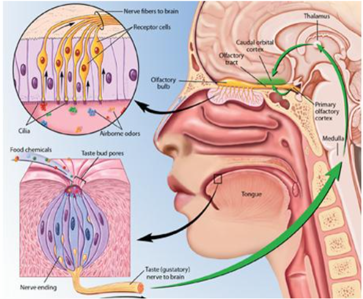
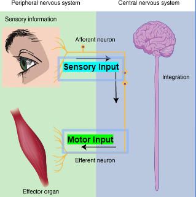

The Senses, The Body and Stress Part 1
Callout
Each living organism has its own senses developed specifically to respond properly to its environment and to accomplish its biological needs successfully.
- Pigs have a very developed sense of smell that enables them to detect very low concentrations of chemicals.
- Dogs can hear high-frequency sounds.
- Rattlesnakes can see the infrared portion of the electromagnetic spectrum.
- Bees can see ultraviolet rays which enables them to detect some specific-colored flowers.
- Bats have the ability to locate objects by transmitting sounds and interpretation the sound that is reflected as an echo “Echolocation”.
For humans, the combination of our traditions that works in a dynamic equilibrium enables us to observe and respond to our external environment perfectly.
Echolocation found in some mammals such as birds, bats, and dolphins are a specialized adaptation that allows animals to navigate in environments where visibility is limited.
However, Neuroscientists have recently discovered that blind people developed the ability to echolocate.
fMRI images show that the visual cortex of blind people is activated when echolocation is used.
Vision
Vision is the most complex of the five traditional senses in humans.
- The human eye has a lens that forms images and then focuses the images on the field of photoreceptors.
- The photoreceptors convert the signals from electromagnetic energy to nerve impulses.
- Signals that originate at the photoreceptors are integrated into the visual centers of the brain via the optic nerve into a point-by-point representation of the viewed object.
- The retina holds layers of neurons that perform an initial integration of visual information before it is sent to the brain.
There are two types of photoreceptors in the retina:
- Rods are specialized for the detection of light at low intensities.
- Cones are specialized for the detection of different wavelengths (colors).
The retina of a human eye contains about 120 million rods and 6 million cones, organized into a densely packed single layer.
Hearing
The auditory organ for humans is the ear.

Callout
The pinna (outer ear) focuses on sound waves.
- Inside the auditory canal, sound waves strike a thin sheet of tissue, called the tympanic membrane or eardrum, causing it to vibrate.
- These vibrations generate vibrations in the auditory ossicles, the chain of tiny bones located in the air-filled middle ear.
- Mammal ears have three auditory ossicles: the malleus (hammer), the incus (anvil), and the stapes (stirrup).
- The stapes meet the inner ear at the oval window.
- The oval window is a thin, elastic membrane, where vibrations in bone are converted to vibrations in fluid in the cochlea.
A duct called the Eustachian tube leads from the air-filled middle ear to the throat.
- The Eustachian tube protects the eardrum from damage caused by changes in environmental atmospheric pressure.
- As you swallow or yawn, the Eustachian tube opens, allowing air to flow into or out of the middle ear.
- This equalizes the pressure on both sides of the eardrum.
The inner ear contains several fluid-filled compartments, the semicircular canals and a spiral tube called the cochlea.
- The vibrations in the fluid cause vibrations in the basilar membrane, which forms part of the floor of the cochlea and anchors the sensory hair cells.
- Vibrations of the basilar membrane cause the hair cells to bend depending on the frequency of sound waves.
- This causes action potentials in afferent neurons leading from the inner ear.
- There are more than 15,000 hair cells, which are connected to afferent neurons.
- The axons of the afferent neurons are bundled together in the auditory nerve, leading to the thalamus.
- Signals are routed from the thalamus to the auditory center of the temporal lobe, where they are interpreted as sounds.
Taste
Chemoreceptors are receptors that are involved in taste and smell (also; sense levels of oxygen, carbon dioxide, and hydrogen ions in the body).
- The taste bud (chemical receptors) is a small pear-shaped capsule with a pore that opens to the exterior at the top.
- The sensory hairs of taste receptors pass through the exterior pore of a taste bud and are exposed to the inside of the mouth.
- The opposite ends of the receptor cells synapse with the dendrites of an afferent neuron.
- The taste buds are scattered over the tongue, the roof of the mouth, and the throat.
- The taste buds on the tongue are embedded in outgrowths called papillae. which give the tongue its rough texture.

- Taste receptors on the human tongue respond to five basic tastes: sweet, sour, salty, bitter, and umami (savory).
- Signals from taste receptors are relayed to the thalamus. From there,
- some signals travel to gustatory or taste centers in the cerebral cortex, which interpret them as different tastes.
- Some signals travel to the brain stem, which links tastes to involuntary visceral and emotional responses.
- A pleasant taste may lead to salivation, the secretion of digestive juices, and sensations of pleasure. An unpleasant taste may produce nausea and vomiting.
Callout
Smell
Each olfactory receptor cell has 10 to 20 sensory hairs, which project into a layer of mucus that covers the olfactory area in the nose.
- Olfactory receptors are distinct among sensory receptors because they make direct connections with brain interneurons, rather than making connections via afferent neurons.
- Nerves from olfactory bulbs conduct signals to the olfactory centers of the cerebral cortex, where they are interpreted as tantalizing or unpleasant odors.
- As with taste, some olfactory bulbs also connect to the brain stem, where nerve signals elicit emotional and visceral responses similar to those caused by different tastes.

Callout
Taste & Smell
The main differences between the chemoreceptors of taste (taste bud) and smell (olfactory cell) are present in the structural organization.

Callout
Touch
Mechanoreceptors that detect touch and pressure are embedded in the skin, other surface tissues, and internal organs.
- The mechanical forces of a stimulus alter the flow of ions through the membrane.
- Ion flows change the membrane potential of the receptors and generate action potentials in afferent neurons leading from the receptors to the CNS.
- Free nerve endings are dendrites of afferent neurons.
- In Pacinian corpuscles, structures surrounding the nerve endings contribute to the reception of stimuli.
- Free nerve endings wrapped around hair follicles respond when the hairs are bent, making us instantly aware of a light touch.

What are those mechanoreceptors?

Callout
- The touch receptors in human skin are concentrated in the small organs; fingers, lips, tongue, giving, nose, and ears… these areas have the greatest sensitivity to mechanical stimuli. In other areas, such as the skin of the back, arms, and legs, the receptors are more widely spaced.
- Some sensory receptors, such as touch receptors, are positioned individually in body tissues, while others are part of complex sensory organs, such as the eyes or ears which receive external stimuli and come as a pair.

5 types of sensory receptors that receive stimuli and send information to the CNS:
- Mechanoreceptors: detect mechanical forces; such as pressure, body position, acceleration...etc. (Auditory receptors in the ears).
- Photoreceptors: detect the energy of light (cones and rods in the retina).
- Chemoreceptors: detect chemical molecules or chemical conditions, such as acidity. (Taste buds on the olfactory cells).
- Thermoreceptors: detect changes in the temperature of the body surface.
- Nociceptors: detect tissue damage or noxious chemicals. responsible for the sensation of pain. (located in skin and internal organs).

Sensory adaptation
The tendency for some sensory receptors to become less sensitive when stimulated repeatedly.
Some receptors adapt quickly and broadly, but others adapt only slightly. As an example;
- When you get into bed, you are initially aware of the touch and pressure of the covers on your skin. Within a few minutes, the sensations are lessened or lost.
- When you move from a dark room directly under the sunlight, the photoreceptors in your eyes adapt to the sudden bright light, partly through the breakdown of some of the pigments that absorb light.
- Adaptation of the photoreceptors in our eyes keeps us from being blinded indefinitely as we pass from the dark into bright sunlight.
Sensory adaptation is crucial to survival. Sensory adaptation also increases the sensitivity of receptor systems to changes in environmental stimuli.
- Nocireceptors, however, show little or no adaptation because pain detectors are essential for survival.
- They signal a potential danger to some part of the body, and they maintain the signal until a response by the animal compensates for the stimulus causing the pain.
In mammals, distinct thermoreceptors respond to hot and cold. 5 kinds of Ca2+ channels act as thermoreceptors. 3 responding as a thermoregulator and one only implicated in pain perception when the temperature is too low or too high.
- The change in body temperature is detected by thermoreceptors and then transmitted and interpreted by the hypothalamus.
- The hypothalamus sends out a signal to dilate the blood vessels in the skin.
- This increases the blood flow near the skin, increasing the transfer of thermal energy to the air, which cools down the body.
- Local nerves also stimulate vasodilation of the blood vessels in the skin by the release of a neurotransmitter (substance P).
- Ruffini endings: are slowly adapting thermoreceptors that are located deep within the skin. They respond to temperatures above 45 °C, and also to touch and pressure.
-
Closer to the surface of the skin, another type of thermoreceptor is activated at temperatures of 20 °C or lower. When this type of receptor senses a temperature below 10 °C, it alerts the body to cold through a pain response.
Nociceptors, detect damaging internal and external stimuli, which are interpreted by the brain as pain.
- Pain is a protective mechanism that prompts animals to remove or decrease the damaging stimulus immediately.
- This reaction is often a reflex response.
- Axons that transmit pain signals are part of the somatic system of the PNS.
- They synapse with the interneurons in the grey matter of the spinal cord and activate neural pathways to the CNS by releasing neurotransmitters.
- Glutamate-releasing axons produce sharp, prickling sensations that can be localized to a specific body part.
- Substance P–P-releasing neurons produce dull, burning, or aching sensations that are not easily localized.
- As part of their protective function, pain receptors adapt very little, if at all. They can even increase the rate at which they produce action potentials if the stimulus continues at a constant level.
- The CNS has a pain-suppressing system by releases endorphins (natural painkillers).

Callout
A sensory processing disorder (SPD), also known as a sensory integration disorder, manifests itself as difficulties in interpreting information from sensory receptors.
- Stimuli are received normally, but they are interpreted abnormally, this may include one or more senses. People who have SPD may experience hypersensitivity (overstimulation) or hyposensitivity (under-stimulation).
- SPD is often diagnosed in childhood.
- Children who have SPD have a different sensory perception of the world normal clothing may feel like sandpaper, and lights in a classroom may seem so bright that they burn the eyes, this disorder interferes with everyday functioning and causes great stress.
- Our understanding of stress is due to the endocrinologist founder of the Canadian Institute of Stress conducting scientific studies from 1940 - 1970 stress is more than just an emotional response to the general environment rather, it involves a biological response that can be clearly identified and described.
- He differentiated between bad stress “distress,” and good stress “eustress.”
Selye described the body’s response to stressors as the General Adaptation Syndrome, which consists of three stages.
- The alarm reaction: the body mounts a fight-or-flight response, displaying the typical symptoms of stress.
- The resistance stage: the body attempts to deal with the stress. If the stress stops, the body normalizes. If the stress continues, the body adapts to it, but It cannot continue indefinitely to resist because it taps resources that become depleted.
- In the exhaustion stage: the body’s resources are depleted and body function is impaired, sometimes to the point of death.

Callout
Stress is the body’s response to a stressor causing an imbalance in homeostasis.
- The body responds in a certain way to stress to keep its homeostasis balanced.
- This response adjusts the stimuli and protects the body from an internal or external threat.
- In front of a stressful situation, multiple physiological symptoms appear, this is a “Fight or Flight” situation.
- The stressful situations could be positive or negative, acute or chronic stress, and physical or emotional stress.
What’s the Fight or Flight reaction?
The response of the body in front of a stressful situation is a cascade of events that permit the person to choose whether to fight against the stressor or to run away. It’s the “fight and flight” response regulated by the sympathetic nervous system.
Once the threat has disappeared, this part of the body slows down. It’s the “digest and rest” response controlled by the parasympathetic nervous system and allows organic functions to be active such as digestion and reproduction.
What are the types of stress?
Stress can be negative or positive; physical or psychological and emotional:
- If you become scared, if you are resisting doing something that you want to do, if you’re exciting traveling; this is negative and positive psychological and emotional stress.
- If you’re doing long-distance running, your body becomes very fatigued. This is an example of physical stress. A hectic and high-pressure job on a daily basis can cause both psychological and physical stress.
- If you experience a car accident or, for soldiers, being in combat. Even though the stressor has been removed, the person may exhibit post-traumatic stress disorder, a serious anxiety disorder that persists after a traumatic event is over.
|
Positive Stress Starting a new job Getting a promotion Going to vacation Having a child Falling in love |
Negative stress Being abused or attacked Financial challenges Legal problems Health problems Death of a significant person |
In the short term, negative stress is not harmful and could be necessary. At some degrees of stress; it can be beneficial because they cause the body to adapt to changing situations.
- Chronic stress is usually caused by bad habits repeated in the longer term, it harms the body and causes long-term diseases such as depression and anxiety, heart attacks, diabetes, and memory and concentration problems.
- The amount of stress that a person experiences depends on factors: the duration and intensity of a stressor, and the predictability and controllability of the person.
- Stress is subjective; which means that different people cope with the same situation in different ways. One person may exhibit few signs of stress in a situation that could cause another person extreme stress.
What are the physiological modifications that occur to the body during stress?

How the Mineralocorticoids are secreted!

Callout
The body detects stressful situations in longer terms and it attempts to maintain homeostasis through a set of negative feedback systems. The renin-angiotensin-aldosterone pathway is one of these systems that activates in case of an injury.
- If blood flow to the kidneys is reduced through blood loss,
- The kidneys secrete the hormone renin,
- Renin stimulates the production of angiotensin,
Angiotensin stimulates the secretion of the hormone aldosterone from the adrenal cortex
- One of the health issues caused by chronic cortisol levels is the high blood glucose level.
- The level at which the body keeps glucose will rise. And can cause the cells to become insulin-resistant.
- Cells are unable to take in and use blood glucose, and it remains in the bloodstream.
- Eventually, it is excreted in urine, but the muscles never receive the energy they need.
Callout
Prostaglandins are secreted as part of the stress response; they are locally acting molecules derived from fatty acids.
- Some prostaglandins dilate blood vessels increasing blood flow.
- Others make the neurons in the spinal cord sensitive to pain and initiate an inflammatory response and fever in response to tissue damage.
Trauma, allergic reactions, and severe illnesses can trigger extreme stress responses in the body “shock”.
- The symptoms of shock are disorientation, pale skin, rapid heart rate, and low blood pressure.
- Shock can be life-threatening because body organs are not receiving enough blood.
Callout
In an allergic reaction, it’s not the substance itself that causes the shock but the immune system that overreacts to foreign substances.
- The body overproduces histamine.
- Histamine causes rapid swelling in some body tissue.
- The swelling of tissue in the airways makes some allergic reactions deadly.
- In extreme cases, airflow is blocked and blood flow is constricted.

Callout
Trauma, allergic reactions, and severe illnesses can trigger extreme stress responses in the body. A traumatic event or injury can produce a condition called shock (not to be confused with an electric shock).
The symptoms of shock include disorientation, pale skin, rapid heart rate, and low blood pressure. Shock can be life-threatening because body organs are not receiving enough blood.
- Severe allergies to insect venom and certain foods can cause anaphylactic shock, a person's anaphylactic shock experience: disorientation, pale skin, rapid heart rate, low blood pressure, itching and hives, difficulty breathing and swallowing, swollen lips, and a swollen tongue.
- Inject epinephrine can save a person’s life by restoring air and blood flow since it dilates the airways and blood vessels.